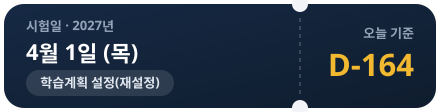

앱 아이콘 로고 (logo-1q-primary.svg)
네이비 그라데이션 스쿼클 + 골드 체크 Q 테일
상단 헤더 로고 (logo-1q-header.svg)
44×44px 홈 화면 좌측 상단용 벡터 로고

홈 수험표 카드 (exam-ticket-card.svg)
양옆 반원 펀치 홈 + 캡슐 설정 버튼 + 골드 D-day
풀이 보기 단추 4상태 (choice-buttons-set.svg)
유니코드 ①②③④ 대신 또렷한 숫자 + 우측 상단 ✓/✕ 배지
풀이 화면 상단 배지 (badge-freq-hot / badge-memo-exists.svg)
빈출 불꽃 배지 & 보라색 메모 배지
계산 근거 신뢰도 배지 (badge-tag-verified / assumed.svg)
체크/느낌표 아이콘이 내장된 캡슐형 배지
학습 원리 태그 3종 (badge-principle-tags.svg)
오답 교정(레드) · 간격 반복(블루) · 약한 과목 먼저(퍼플)
다시 풀기 단계 배너 (relearn-banner-card.svg)
아이콘 컨테이너 + 2줄 타이포그래피 위계
모달 트로피 & 빈 상태 일러스트
goal-achievement-badge.svg / empty-pack-illustration.svg
백업·설정 (Lucide settings)
홈 우측 상단 설정 버튼 (기존 슬라이더/⚙ 문자 대체)
icons/settings.svg
성적·통계 (Lucide chart-no-axes-column)
풀이 화면 우측 상단 [성적] 단추 (기존 📊 이모지 및 삼지창 선 대체)
icons/chart.svg
AI 웹검색 (Lucide search + sparkle)
풀이 화면 [웹검색] 단추 (구글 AI 모드 개념 설명 검색)
icons/search-ai.svg
일반 검색 (Lucide search)
일반 검색 아이콘 (기존 🔎 입체 이모지 대체)
icons/search.svg
메모 쓰기·수정 (Lucide pen-line)
정답 확인 후 [메모 쓰기 / 수정] 칩 단추 (기존 ✎ 대체)
icons/pencil.svg
메모 있음 (Lucide file-text)
풀이 화면 상단 [메모 있음] 보라색 배지 (기존 📝 이모지 대체)
icons/note.svg
학습 원리 (Lucide book-open)
홈 하단 [학습 원리 · 예상 점수 계산 방법] 카드 (기존 📘 이모지 대체)
icons/book.svg
다시 풀기 (Lucide repeat)
오답/모름 다시 풀기 배너 및 원리 카드 (기존 🔁 이모지 대체)
icons/repeat.svg
위험 경고 (Lucide triangle-alert)
학습 점검 카드(위험) 및 한계 안내 (기존 ⚠ 및 뾰족한 삼각형 대체)
icons/alert-triangle.svg
주의·아슬아슬 (Lucide circle-alert)
학습 점검 카드(주의/공부량 부족) 제목 아이콘
icons/alert-circle.svg
점수 변화 화살표 (Lucide arrow-right)
현재 점수 → 시험일 예상 점수 연결 (기존 ☞ 손가락 기호 대체)
icons/arrow-right.svg
뒤로가기 (Lucide chevron-left)
상단 [‹ 홈] 알약 단추 및 이전 문항 이동
icons/back.svg
이동·상세 (Lucide chevron-right)
카드·리스트 우측 이동 표시 (기존 유니코드 › 대체)
icons/forward.svg
펼치기 (Lucide chevron-down)
[왜 이렇게 구성했나요?] 아코디언 및 드롭다운 (기존 ▾ 대체)
icons/chevron-down.svg
접기 (Lucide chevron-up)
[왜 이렇게 구성했나요?] 열림 상태 표시 (기존 ▴ 대체)
icons/chevron-up.svg
닫기·멈추기 (Lucide x)
풀이 화면 좌측 상단 나가기 단추 (기존 ✕ 대체)
icons/close.svg
정답·완료 (Lucide check)
정답 판정, 합격선 통과, 백업 복원 완료 표시 (기존 ✓ 대체)
icons/check.svg
축소 (Lucide minus)
문제 그림 축소 단추 (기존 흐릿한 하이픈 - 문자 대체)
icons/minus.svg
확대 (Lucide plus)
문제 그림 확대 단추 및 날짜별 시간 [+ 추가] 단추
icons/plus.svg
원래 크기로 (Lucide rotate-ccw)
문제 그림 배율 초기화 단추 (기존 ↺ 텍스트 대체)
icons/reset-zoom.svg
목표 달성 트로피 (Lucide trophy)
오늘 학습 목표 달성 모달 타이틀 (기존 🎉 이모지 대체)
icons/trophy.svg
망각 곡선 (Lucide chart-spline)
학습 원리 [잊을 때쯤 다시 — 망각 곡선과 간격 반복]
icons/trend.svg
FSRS 알고리즘 (Lucide cpu)
학습 원리 [FSRS 알고리즘] 전용 아이콘 (설정 아이콘과 중복 해소)
icons/cpu-fsrs.svg
과락 방지 저울 (Lucide scale)
학습 원리 [약한 과목 먼저 — 과락 막기]
icons/scale.svg
교차 학습 섞기 (Lucide shuffle)
학습 원리 [섞어 풀기는? — 솔직한 답]
icons/shuffle.svg
예상 점수 과녁 (Lucide target)
학습 원리 [시험일 예상 점수]
icons/target.svg
검증 실험 플라스크 (Lucide flask-conical)
학습 원리 [이 방법은 어떻게 검증했나]
icons/flask.svg